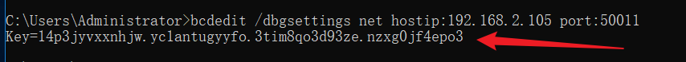
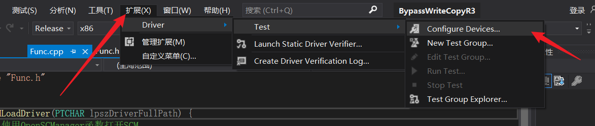
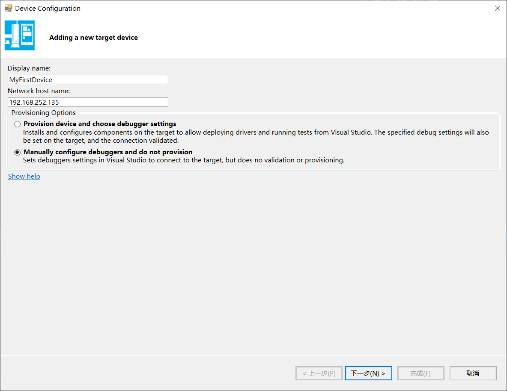
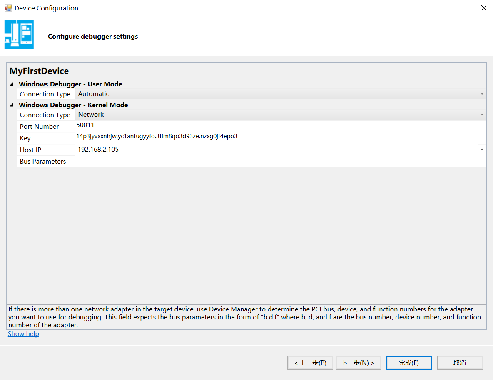
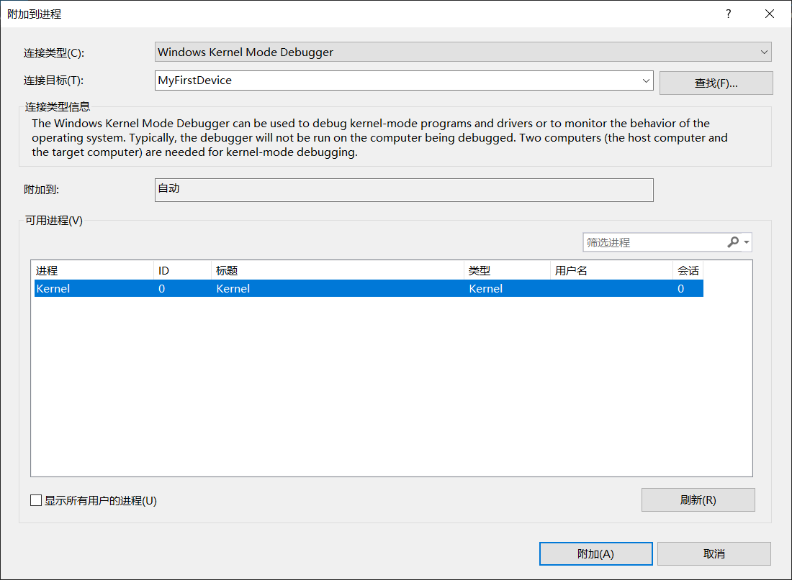
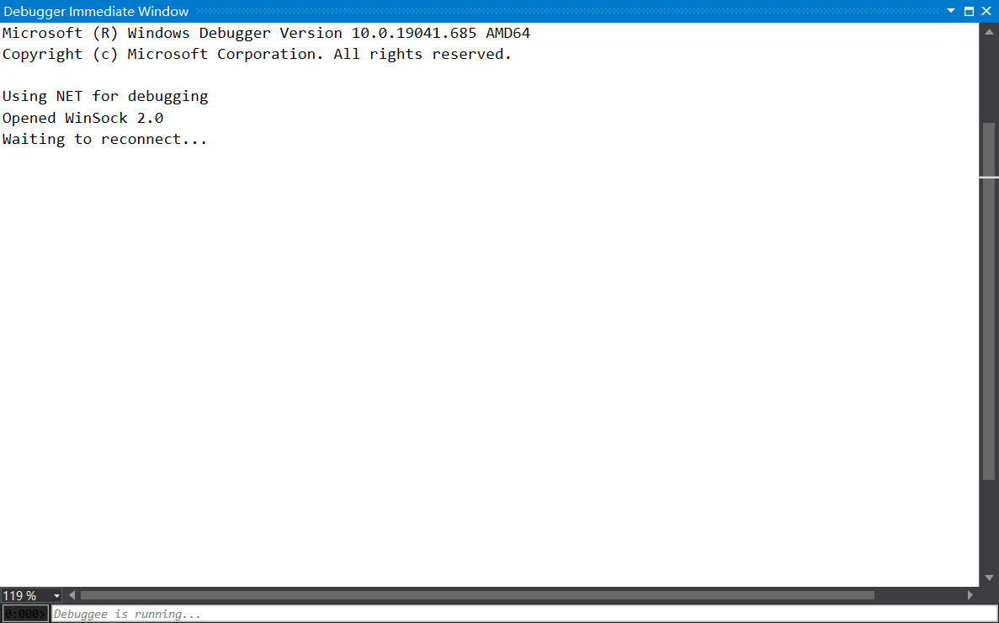
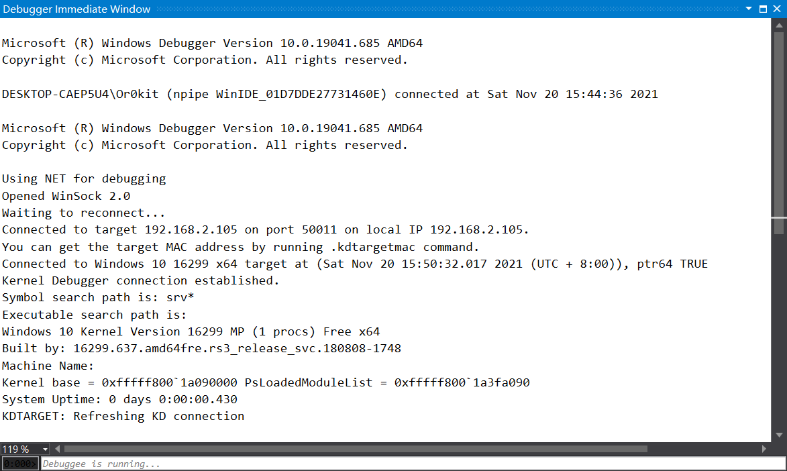

# 基于 VS + WDK 的环境调试
物理机为 win10,Visual Studio 的办事本是 2019，配合 WDK10 版本。
VMware 虚拟机内安装了一个 Win10 操作系统，虚拟机网卡使用 NAT 方式，具体情如下：
调试机器：Windows10 IP：192.168.2.105
被调试机器：Windows10 IP：192.168.252.135
调试使用网络作为调试机器与被调试机器之间的连接方式，但是注意防火墙，为了避免不必要的麻烦建议关闭防火墙，或配置防火墙放行规则，不管怎样，要保持调试机器与被调试机器之间网络的畅通。
# 配置被调试机
以管理员权限运行 cmd , 输入： bcdedit/debug on 命令。这个命令的作用是把被调试机器设置成调试模式。
再输入： bcdedit /dbgsettings net hostip:192.168.2.105 port:50011 。
这个命令的作用是使用网络进行调试的连接方式， hostip 值调试机器的 IP， port 标识使用的网络端口，建议范围是 49152-65535 。
命令执行完后会显示一个 Key ，需要保存这个 Key ，用于后面调试机器的配置。

# 配置调试机
首先打开 VS，找到 Configure Devices

点击 Add New Device 弹出的配置对话框，在 “Dispaly name” 下面输入设备的名字，例如： “MyFirstDevice”；
在 “Device Type” 下面的下拉框中选择 “Computer”；我的 vs2019 版本中没有这个选项，忽略。
在 “Network host name” 下面输入被调试机器的 “hostname”，也可以输入 “IP”；
在最后一项 “Provisioning Options” 中，选择第二项 “Manually configure debuggers and do not provision”，意思是说手动配置被调试机器的调试选项以及手动分发驱动文件。
整体配置如下：

完成后点击下一步。
需要注意的是，如果被调试机器只有一个网卡，则最后一个 “bus Parameters” 可以不填，否则需要根据 PCI 规范，填入相应设备的总线号（Bus number）、设备号 (Device Number) 以及功能号（Function number），因为我的被调试机只有一块网卡，所以这个值留空。
整体配置如下：

# 进行调试
开始调试前介绍两个断点函数
KdBreakPoint() ：只对 Debug 版的驱动有效。DbgBreakPoint() ： 对 Release 版的有效。
驱动代码如下：
#include<ntddk.h> | |
// 卸载函数 | |
VOID DriverUnload(PDRIVER_OBJECT driver) | |
{ | |
DbgPrint("驱动程序停止运行了.\r\n"); | |
} | |
NTSTATUS DriverEntry(PDRIVER_OBJECT pdriver, PUNICODE_STRING pRegPath) | |
{ | |
DbgPrint("我是驱动，我被加载了。\r\n"); | |
DbgBreakPoint(); | |
pdriver->DriverUnload = DriverUnload; | |
return STATUS_SUCCESS; | |
} |
首先编译生成 sys 文件，然后在 VS 的菜单中找到 “调试”-->“附加到进程”，在弹出的对话框中，选择 “连接类型” 为 “Windows Kernel Mode Debugger”，“连接目标” 选择为刚才我们配置好的 “MyFirst Device”，在可用进程中选择 “Kernel”，如下所示：

点击附加后 vs 中会出现一个 “Debugger Immediate Window” 界面，界面显示如图所示：

这表示当前调试使用网络连接的方式，正在等待被连接。接下来重启被调试机器，让被调试机器的调试配置生效。
被调试机器在重启过程中，会主动连接设置的 50011 端口，连接建立好之后，可以在 “Debugger Immediate Window” 界面看到如下信息：

最后把 sys 文件放入被调试机器中，运行加载该驱动，由于有断点所以会被断下，我们就可以 F10 单步调试了。
# Reference
谭文 陈铭霖《Windows 内核编程》